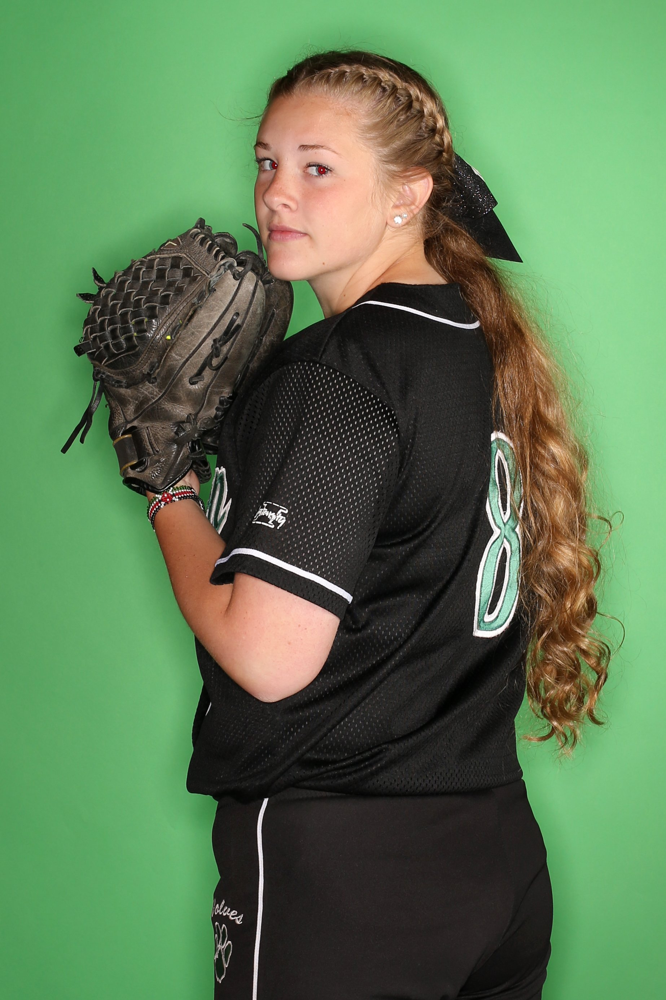
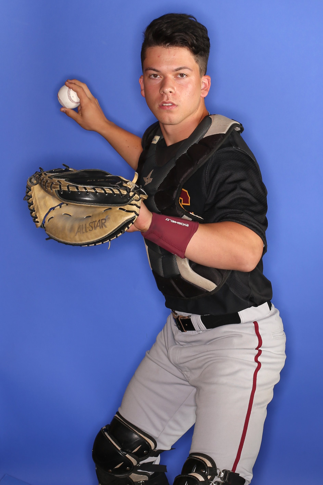

It’s been another colorful spring season of high school sports in the Puget Sound region. Below you can meet all 36 of The Seattle Times’ picks for all-area athletes and coaches in baseball, softball and boys' soccer.
This marks the 38th year of Star Times, which started in the fall of 1978. Star Times all-area teams are chosen after the regular season by Seattle Times editors and freelancers. Selections must be from schools in King and Snohomish counties.
Published May 23, 2016








Click or tap on an athlete for details.
Photos by Johnny Andrews
Video by Johnny Andrews, Katie G. Cotterill and Solange Reyner
Athlete bios by Doug Drowley (baseball), Matt Massey (soccer) and Sandy Ringer (softball)
Production by Nick Eaton and Thomas Wilburn
Video by Johnny Andrews, Katie G. Cotterill and Solange Reyner
Athlete bios by Doug Drowley (baseball), Matt Massey (soccer) and Sandy Ringer (softball)
Production by Nick Eaton and Thomas Wilburn